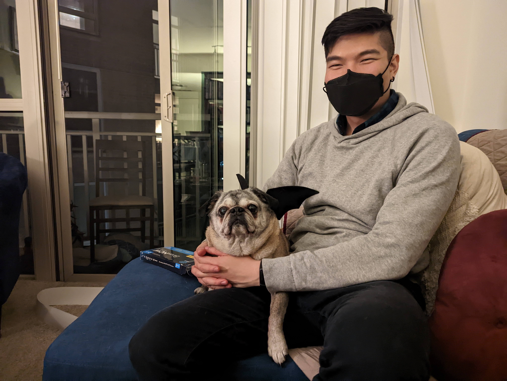

Hello, and welcome to my blog! My name is Leo, and I’m 30 years old. Since June 23, 2022, I’ve been struggling with Long Covid.
Before my first Covid infection this year, I was a triple-vaccinated, healthy, and happy guy living in Washington, DC. I was doing work I found meaningful, dating as a young gay man, and socially active. Physically, I enjoyed biking, hiking, lifting weights, and often packed my social calendar back-to-back without worry or consequence.

But for over four months now, I’ve struggled with a relatively new medical condition that has drastically changed the quality of my life. These days, I’m unable to work full-time, rarely leave my apartment, and can’t easily take care of myself. I rely a lot on my wonderful friends and community for rides, companionship, help around the house, and other forms of regular care. Although my doctors are kind, I often leave medical appointments feeling like they didn’t have much to offer, with the root cause of my condition unidentified and approved treatments potentially still years away.
I’m starting this blog to have a place to chronicle the ups and downs of my journey with Long Covid when I can. I hope it can be a place where I can organize the myriad information I consume about Long Covid and its effects on virtually all organ systems of the body, document the results of mini self-experiments in recovery while navigating a condition with no approved treatments, try to uncover what’s going on in my body, and share about the challenging mental and emotional aspects of living with a medical condition that’s left me quite disabled for now.
Perhaps through the process of writing – organizing, fact-checking, separating evidence from theory, and fact from feeling – I can cultivate a greater sense of patience about the journey I’m on and more fully own the story of my illness. I hope it can help my healing journey along, and maybe even the healing journeys of others suffering from conditions similar to mine.
To those interested in my journey, welcome and thank you for following along! To my fellow long haulers, I’m really happy you’re here – and I believe we will get through this somehow.